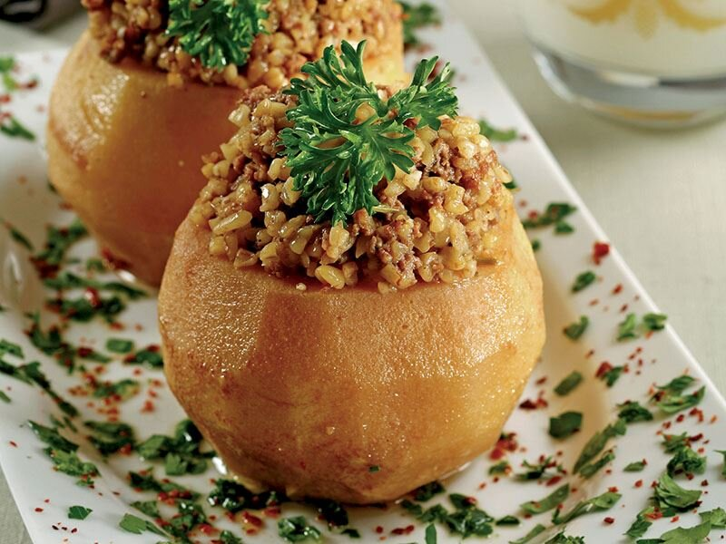
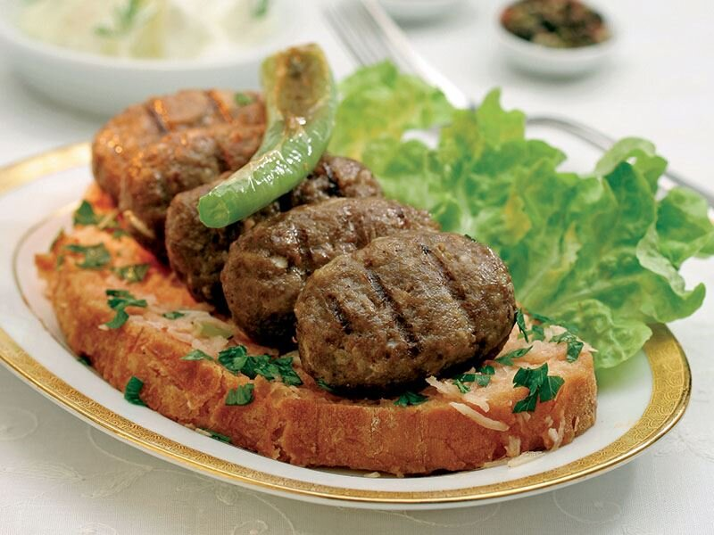
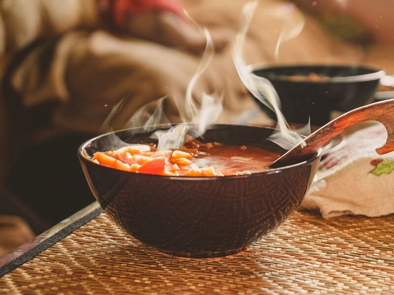
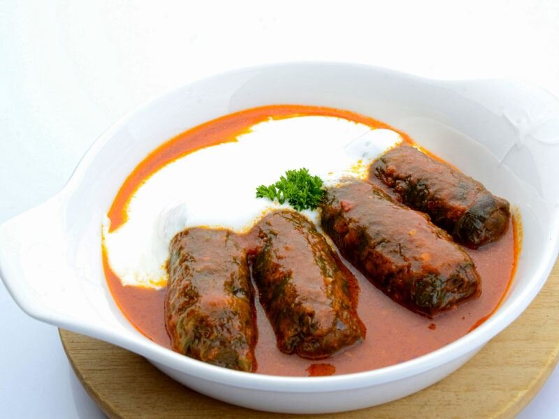
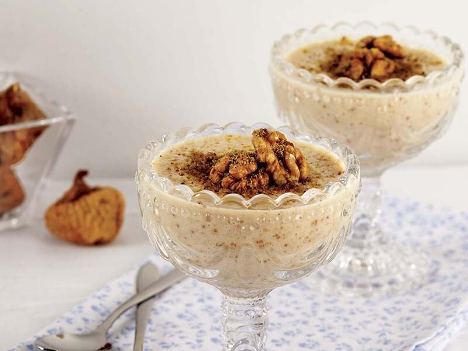

yemekleri
Pekmezli Ayva Dolması
Sakarya’nın hemen her evinde pişirilen ve oldukça sevilen yemeklerden bir tanesidir. Sakarya’nın hemen her mutfağında pişen bu lezzet; ayva, kuzu kıyma, file badem, kuş üzümü, fıstık içi, pirinç pilavı, kuru soğan, pekmez, tereyağı, tuz, karabiber, kekik ve biberiyenin bir araya getirilmesi ile yapılmaktadır.
İlk bakışta oldukça karışık ve değişik görünen bu yemek, tadına bakan hemen herkes tarafından oldukça beğenilmektedir.
Tarifi
- İçi doldurulacak büyük boy ayvaların iki tanesinin alt ve üst kısımlarını kesin.
- Servis tabağında düz durması için kestiğiniz alt tarafları servisinde kapak olarak kullanmak üzere bir kenara ayırın. Ayvaların üst kısımlarını dört eşit parçaya ayırın.
- Taban kısımlarının delinmemesine dikkat ederek, iki adet büyük boy ayvanın orta kısmını bir kaşık ya da oyacak yardımıyla oyun.
- Ayvaların yuvarlak halde kalan iki adet alt kısmı, içi oyulan iki adet ayva ve üst kısımlarını eşit parçalara ayırıp ettiğiniz sekiz dilim ayvayı bir tencereye alın. Üzerlerini geçecek kadar su ilavesiyle orta ateşte 10 dakika kadar haşlayın.
- Kabuğunu soyduğunuz diğer büyük boy ayvayı dört eşit parçaya bölün, çekirdekli kısımlarını çıkartın ve rendenin kalın tarafıyla rendeleyin.
- Rendelediğiniz ayvayı küçük bir tavada şekeri açığa çıkana kadar soteleyin ve püre haline getirin.
- Kuru soğanı küçük parçalar halinde yemeklik doğrayın. Tereyağını ayrı bir tavada eritin. Kuru soğanı hafif bir renk alana kadar tereyağında soteleyin.
- Kuzu kıyma, file badem, kuş üzümü, fıstık içi, tuz, karabiber, kekik ve biberiye eklediğiniz sotelenmiş kuru soğanları, kıyma suyunu çekene kadar kavurun.
- Pirinç pilavı ve sotelenmiş ayva püresiyle harmanladığınız iç harcı, haşlama suyundan süzerek çıkardığınız ayvaların iç kısmına doldurun.
- Fırın kabına aldığınız ayva dolmalarının üzerine birer yemek kaşığı kadar pekmez gezdirin. Yarı ısı yarı buhar ayarlı önceden ısıtılmış 200 derece fırında 15 dakika kadar pişirin.
- Haşlanmış olan ayva dilimlerini kalan pekmezle orta ateşte soteledikten sonra servis tabaklarına dizin. Fırından çıkardığınız ayva dolmalarını servis tabaklarına alın. Sıcak olarak bekletmeden servis edin. Sevdiklerinizle paylaşın.

Islama Köfte
Balkan mutfağından Sakarya'ya kazandırılan ıslama köfte, hem yapılışı, hem de tadıyla diğer köftelerden oldukça farklıdır. Islama köfte, toz biberli sosa batırılmış kızarmış ekmek dilimleri ile birlikte sunulur.
Tarifi
- Kıymanın içine soğan rendelenir. Baharatlar katılır ve ekmek rendeden geçirilerek ilave edilir. Kıvama gelinceye kadar elle yoğrulur. En az 1 saat dinlendirilir. Porsiyona 10 adet gelecek şekilde (toplam 80 adet) elle şekillendirilir ve ızgaraya sırayla dizilir.
- Kemik suyunun içine kırmızı toz biber, sıvı yağ ve tuz karıştırılır. Ekmekler ıslama suyuna bandırılır ve ızgaranın üzerine konulur. Az kızaracak şekilde ızgaradan alınır ve servis tabağına 2 dilim koyulur. Kızaran köfteden, tabaktaki ekmeklerin üzerine 10 adet koyulur. Hafif közlenmiş domates ve biber tabağın üstüne konularak servis edilir.
- Tercihen ıslama köfte yanında piyaz, üzüm şırası veya ayranla servis edilir.
- Üretim metodunda diğer köfte çeşitlerinden ayrılan en önemli detay büyükbaş hayvana ait olan kemik suyu, sıvı yağ, kırmızı toz biber ve tuz karışımlarında ıslatılan ekmeklerinde köfteler ile birlikte ızgarada pişirilmesi ve köftelerin ıslama ekmelerin üzerinde servis edilmesidir.

Dımbıl Çorbası
Un, kırmızı biber ve soğan ile hazırlanan dımbıl çorbası, Sakarya mutfağının farklı çorbalarından biridir. Kolay bir şekilde hazırlanan bu çorba, yemeklerden önce sunulur.
Tarifi
- Bir kapta yarım su bardağı su, un ve tuz katı bir hamur olacak şekilde iyice yoğurun. Hamur orta incelikte açılır, küçük küçük kopartılıp unlu tepsiye atılır.
- Tencereye 6 su bardağı su ve tuz atılarak kaynatılır, su kaynayınca içine hamurlar atılır ve pişirilir. Ayrı bir tencerede soğanlar kavrulur
- Soğanlar kavrulduktan sonra içine haşlanmış fasulye ilave edilir ve üzerine kırmızı toz biber, nane katılıp kavrulur ve çorbaya eklenip ocaktan alınır, sıcak servis edebilirsiniz.

Gürcü Sarması
Gürcü mutfağından gelen ve Osmanlı'dan beri büyük bir ilgi gören bu sarma, patatesli harç ile hazırlanır.
Tarifi
- Patatesler yıkanır, kabukları soyulur ve haşlanmaya bırakılır.
- Bir tencerede su kaynatılır ve kaynayan su da karalahanalar birkaç dakika haşlanır.
- Patatesler ezilir baharatlar ile birlikte püre haline getirilir.
- Maydanoz, taze soğan ve bulgur tereyağında kavrulur ve ardından patates püresine eklenerek karıştırılır.
- İçerisine ceviz ve ezilmiş sarımsakta ilave edilir.
- Haşlanan yapraklar harç ile sarılır ve tencereye dizilir. Pişirilir.
- Tereyağı kızdırılır içerisinde salça eklenir ve kavrulur. Sarmaların üzerine dökülerek servis edilir.
- İsteğe bağlı olarak yanında yoğurt ile servis edebilirsiniz.

İncir Uyutma
oğunlukla evlerde hazırlanan bu tatlı, kuru incirin sütle buluşturulmasıyla hazırlanır. Sakarya'da 'incir uyuşturması' ismiyle de bilinir. Yapımında yalnızca 5 malzeme kullanılır.
Tarifi
- Kuru incirleri küçük parçalar şeklinde doğrayın. Sütü tencerede ısıtın ve şekeri ekleyin.
- Yoğurt mayalama işlemindeki gibi parmağınızı süte batırıp dayanabileceğiniz ısıya geldiğinde doğranmış incirleri ekleyin.
- El blenderi ile muhallebi kıvamına gelene kadar ezin. Karışımı kaselere paylaştırın ve üzerini streç folyo ile kapatın.
- Kaselerin üzerini kalın bir bezle kapatıp oda ısısında 3-4 saat mayalanmaya bırakın.
- Buzdolabına yerleştirip 2 saat bekletin. Ceviz ve Antep fıstığıyla süsleyin.
